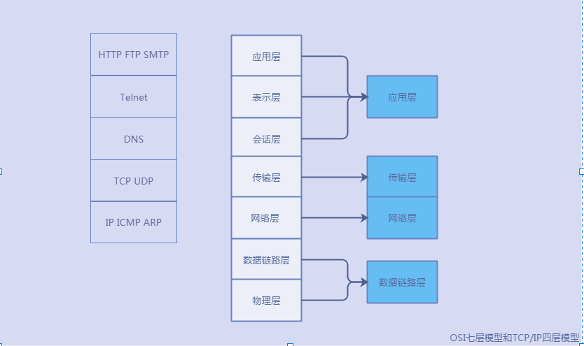

OSI七层模型以及TCP/IP模型

TCP的三次握手和四次挥手
三次握手
- 客户端： hi，服务端，我想跟你建立连接，你同意吗？
- 服务端： 好的，客户端，我同意与你建立连接。我也想和你建立连接，你同意吗？
客户端： 服务端，我同意与你建立连接。
在上述的第二步中 ，服务端做了两件事，第一件是回答客户端同意建立连接，第二件是发起与客户端连接的请求。
在完成第二步的操作后，为什么还需要第三步客户端再向服务端发起一次确认呢？如果客户端发起的第一步请求因为网络延时能异常情况而导致其阻塞了，待客户端已经通过再次发起的请求与服务端完成通信结束后，此时阻塞的请求终于达到服务端，若没有第三步的二次确认，那么服务端就会跟这个异常的请求建立连接，且该链接实质上不会发送任何后续请求，导致占据链接资源。
从上述三步的过程中，也可以简化如下：客服端确认自己发送请求正常
- 服务端确认客户端发送请求正常，自己发送请求，接受请求正常
- 客户端确认服务端发送请求，接受请求正常
四次挥手
- 客户端： hi，服务端，我想要和你断开连接，可以吗？
- 服务端： 好的，现在可以断开连接
- 服务端： 客户端，我想要和你断开连接，可以吗？
- 客户端：好的，我同意
从上面的四步，我们可以发现为什么创建连接只需要三步，而断开连接却需要四步？在创建连接的时候，服务端接受客户端请求和自己发起请求是在一步操作完成的，而在断开连接的时候却是分开两步的，为什么要分开两步呢？因为当服务端收到客户端发起的断开请求后很可能不会直接关闭socket的，在此期间，服务端仍然可能向客户端发送数据，但是客户端却不能向服务端发送数据，因此，服务端会先回复一个响应，然后才能由服务端发起断开连接的请求。
此外，在上述四步完成后，仍然需要等待2MSL(（注：MSL叫做最长报文段寿命，RFC建议为两分钟，也就是说，要经过四分钟才能进入到CLOSED状态），这也是在客户端发送报文可能丢失的情况下的一个容错机制。
http协议
上述简单介绍了TCP/IP四层模型以及TCP协议建立连接和断开连接的过程，现在我们简单介绍下HTTP协议。从上图中我们可以知道HTTP协议是应用层的一个协议，其工作在TCP之上，是互联网应用最广泛的一种协议。全称是超文本传输协议。HTTP协议有以下几个特点：
- 基于请求/响应模型。请求和响应是成对出现的，先有请求后有响应
- HTTP默认端口是80
- 无连接：每次连接只处理一个请求。服务端收到HTTP连接后，处理完响应，即断开一该HTTP连接
- 无状态：每次HTTP请求都是没有上下文的。即上一次HTTP请求的数据，在下一次HTTP请求中是无记忆的。
http协议 目前有版本HTTP/1.0 HTTP/1.1
http协议由请求和响应两部分组成。其中
http请求包含：请求行 请求头 请求体
http响应包含：响应行 响应头 响应体